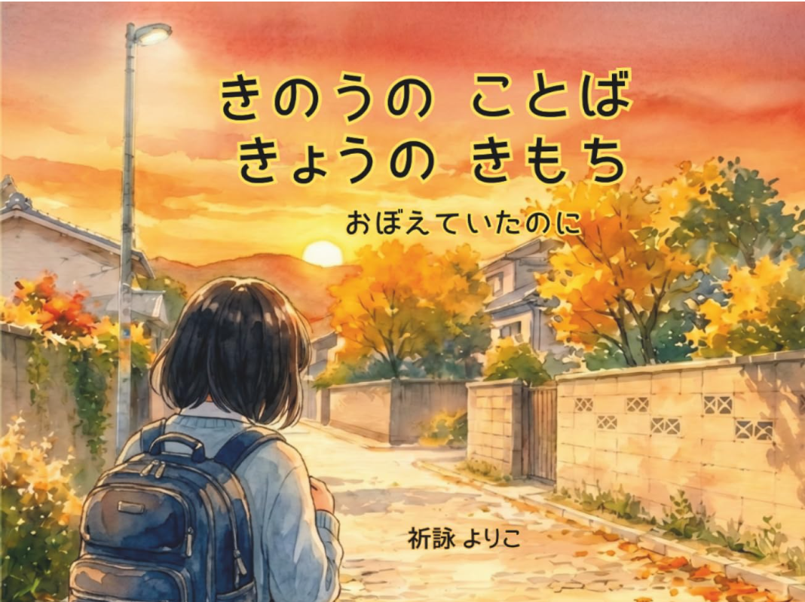
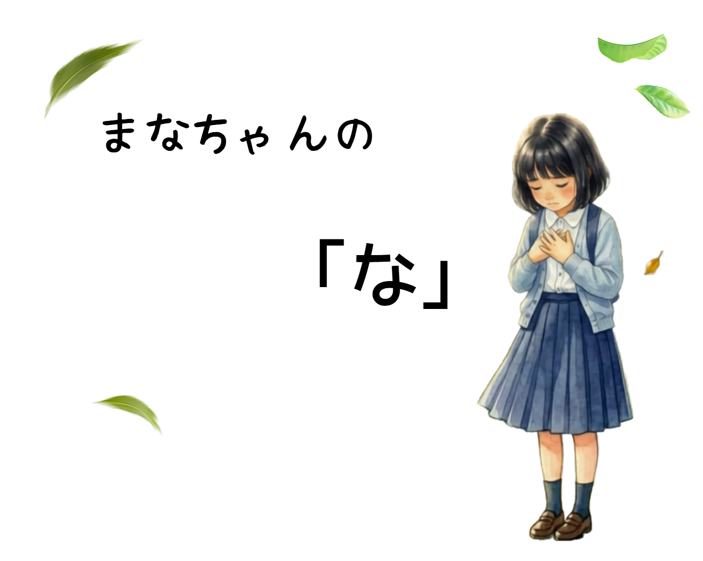
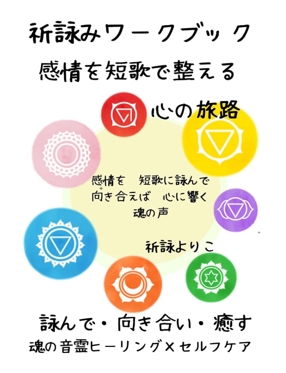
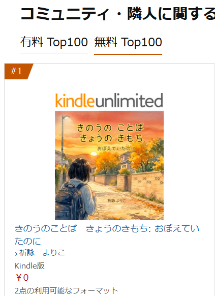
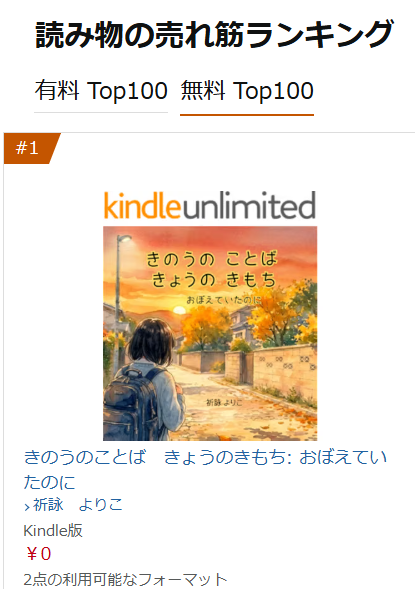
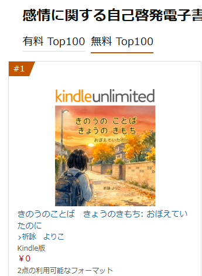
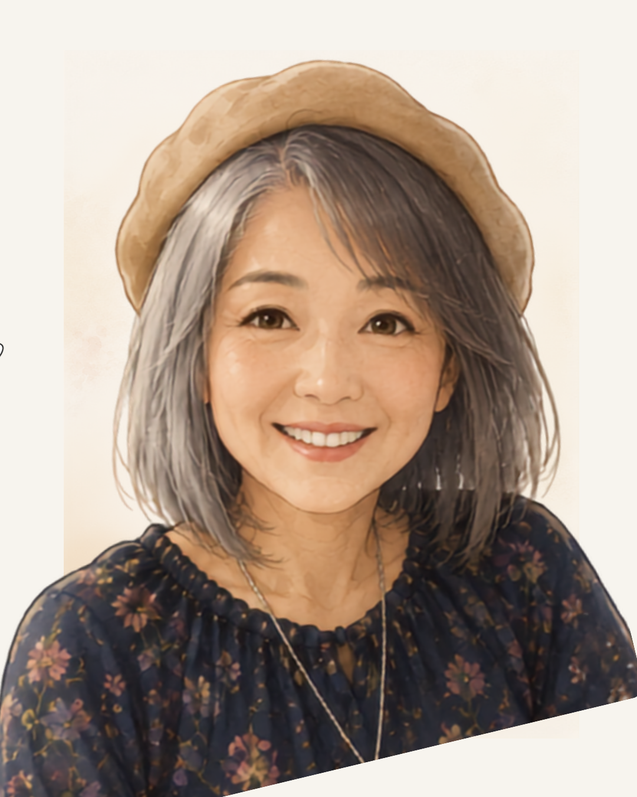

Inoriyomi Yoriko
心にそっと寄り添う物語を。
祈詠よりこ｜絵本作家・心を整える歌詠み人
感情を言葉にし、自分の心に気づく「祈詠み」の考え方を背景に、
子どもから大人まで読める絵本を制作しています。
For you
こんなこと、ありませんか？
- 人から言われたことばが心に残る
- 小さなすれ違いでも「私が悪かったのかな」と考えてしまう
- 気持ちがもやもやするのに、うまく言葉にできない
- 「私はどうしたい？」が分からなくなる
Inoriyomi
活動について｜祈詠みとは
祈詠みは、いまの感情を言葉にし、短歌として詠みながら、自分の本当の気持ちに気づいていく活動です。「本当はこう感じていたんだ」と分かることが、自分に還る小さなきっかけになります。
祈詠よりこの歩みを見るWorks
作品

絵本
『きのうのことば きょうのきもち』
人との小さなすれ違いから「私が悪いのかな」と自分を責めてしまう心が、少しずつほどけ、「わたしはわたしでいい」と自分に戻っていく物語。
子どもだけでなく、大人にも読んでもらえる、心がほぐれる絵本を目指して制作しました。

『まなちゃんの“な”』
現在制作中。

『祈詠みワークブック 感情を短歌で整える心の旅路』
現在販売中。今後、もっとやわらかく自然に取り組める形へ改訂して育てていきたい作品です。
Through the stories
作品を通して目指している変化
01
「私が悪かったのかな」
「嫌われたのかな」
「なんだか心がもやもやする」
02
「本当はこう感じていたんだ」と気づく
03
気持ちを言葉にできる／少し心がほどける／「私はどうしたい？」に目を向けられる。
What matters
作品づくりで大切にしていること
感情を否定せず、自分に還る物語をつくる
心の揺れを「なくす」のではなく、そこからどう自分を取り戻していくかを大切にしています。
子どもにも大人にも届く、やわらかな表現
人とのすれ違いや、自分を責めてしまう気持ちは、子どもだけのものではありません。親子で読んだときにも「こんな見方もあるんだね」と心をゆるめられる作品を目指しています。
答えを押しつけず、自分の気持ちに気づく
「こうすれば正しい」と答えを決めるのではなく、まず「私はこう感じていたんだ」と気づくことを大切にしています。
Reader's voice
読んでくださった方の声・実績
Amazonレビューより
「心が軽くなる1冊です。」
絵本『きのうのことば きょうのきもち』は、無料キャンペーン時に3部門で1位を記録。




About
祈詠よりこについて
祈詠よりこ｜絵本作家・心を整える歌詠み人。
感情を短歌に詠み、見つめる「祈詠み」を背景に、子どもから大人まで心が少し軽くなる絵本を制作しています。著書に『きのうのことば きょうのきもち』。
プロフィールを見るOther activities
その他の活動
絵本や短歌のほかにも、Webアプリ、LINEスタンプ、YouTubeなど、ことばや心をテーマにした活動を少しずつ広げています。
- アプリ
- LINEスタンプ
- YouTube
「わたしは、わたしでいい」と思える物語を。
人とのすれ違いや、
「私が悪いのかな」と自分を責めてしまう気持ち。
そんな心の動きを描いた絵本や、
感情を言葉にする祈詠みの作品をご覧いただけます。
現在は、絵本を中心にご紹介しています。